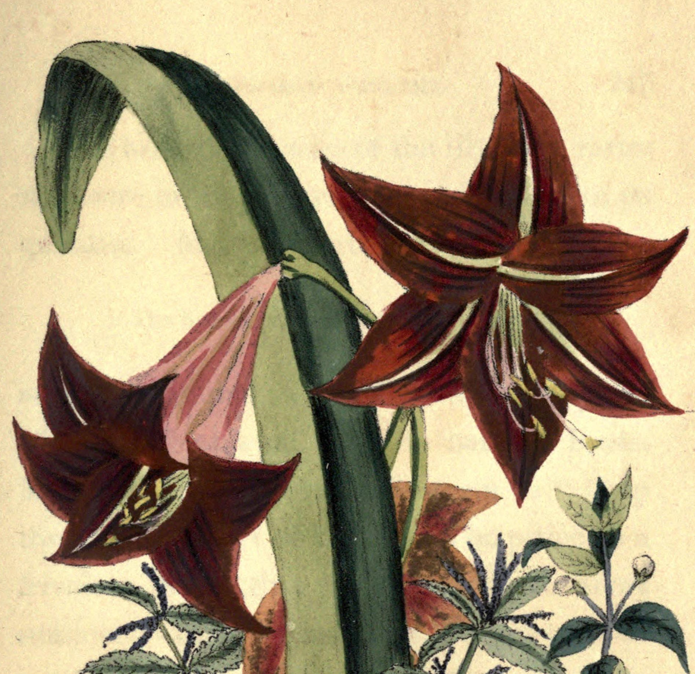

S1F-010
Amaryllis
Güçlü

Anlamlar
- PRIDE [P:218]
- Haughtiness. Pride [T:015]
Kısa hikâye / gerekçe
Amarillis, özenli bakıma rağmen bazen çiçek vermeyi reddettiği için bahçıvanlarca ‘gururlu’ sayılır; buradan kibir ve mağrurluk anlamı doğar.
Çizim değerlendirmesi
Hedef çiçek net veya baskın; mevcut kırpım görsel kullanım için uygun.
Tam kaynak bağlamını göster
[P:218 | PRIDE] In all the liveries deck'd of summer's pride. || [T:015 | Haughtiness. Pride] Gardeners are said to call amaryllis proud because it may withhold its flowers despite attentive care (pp. 135–136).
Kayıtlar: P:218; T:015